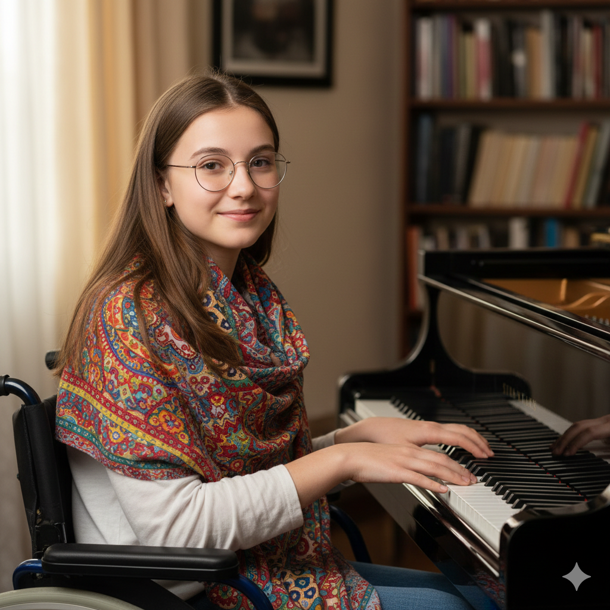
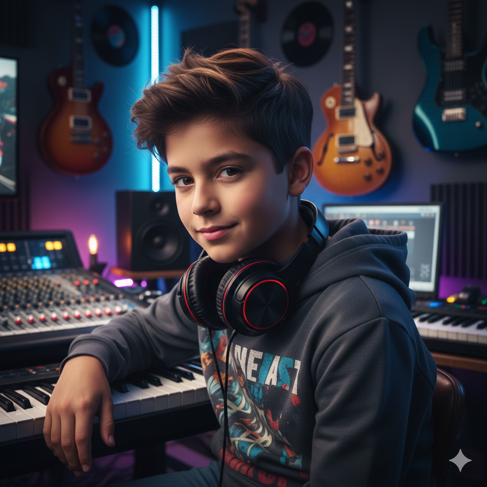
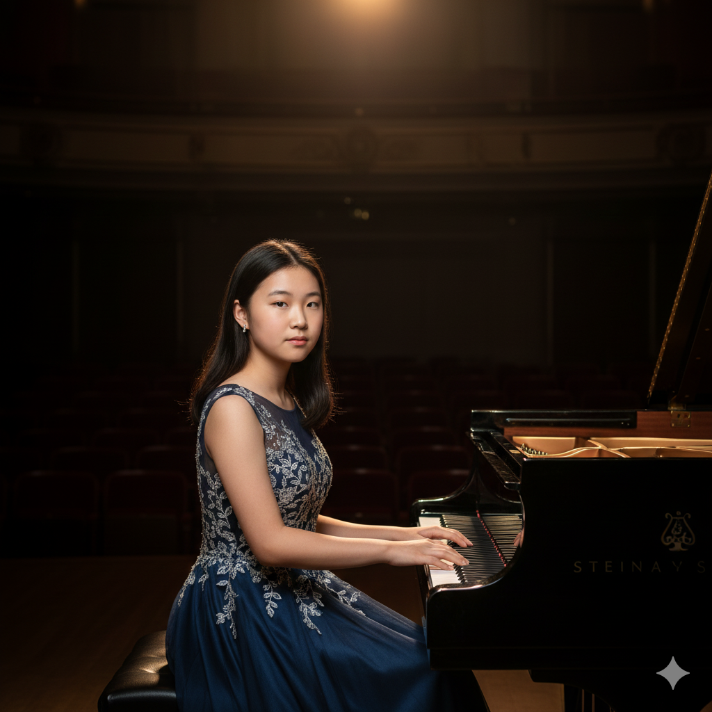
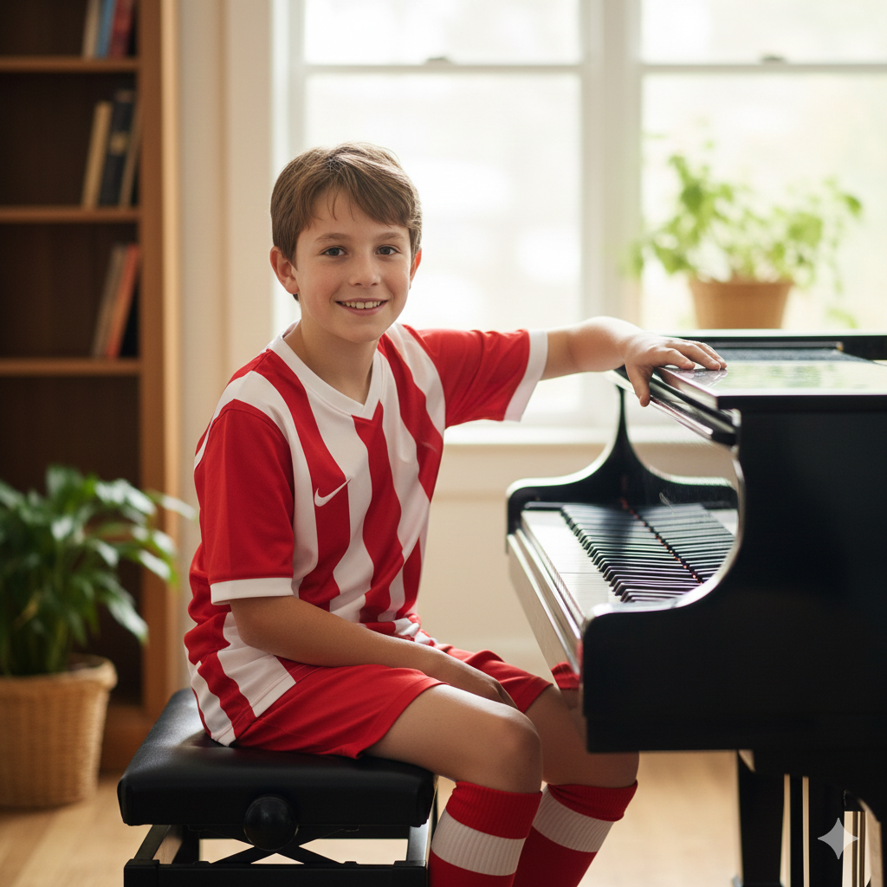
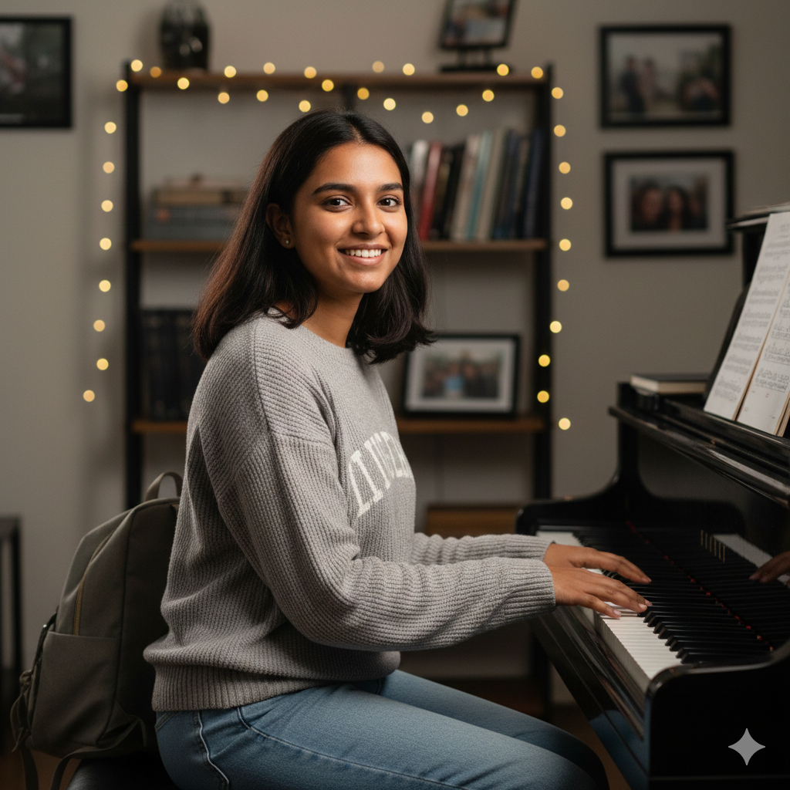

Student Spotlight
Click on any student card to read their full musical story.

Edgar Hufford
Beginner, Age 8Full of energy! Turning enthusiasm into solid technique.

Victor Gamez
Advanced, Age 17Preparing for conservatory auditions. Exploring Rachmaninoff.
Lily Chen
Adult ReturnerA busy professional finding mindfulness through Chopin.

Sarah Jenkins
Intermediate, Age 14A Debussy lover exploring rich soundscapes and pedal layering.

Mateo Cruz
Early Advanced, Age 10Mixing classical structure with jazz improvisation. Perfect pitch.
Dr. Aris Thorne
Adult HobbyistRetired professor analyzing the history behind Bach's fugues.

Chloe Kim
Competitive, Age 15Mastering virtuoso works and overcoming performance anxiety.

Jackson Wright
Intermediate, Age 12Soccer star balancing sports and Sonatinas.

Anya Sharma
College StudentBiology major using piano as a creative escape.
Benji Croft
Age 5Our studio mascot! Learning rhythm games and animal sounds.